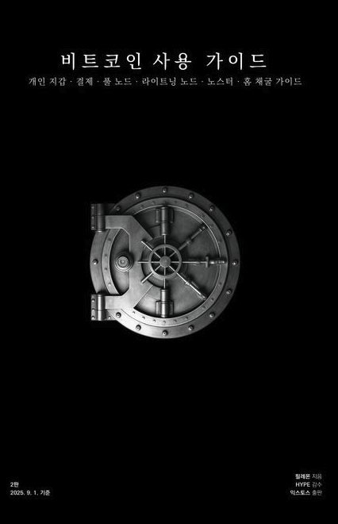

10

웹에서 읽기 가능
비트코인 사용 가이드
Bitcoin User Guide
29개 챕터 요약과 퀴즈를 바로 읽을 수 있습니다.
챕터 목록
준비된 챕터 요약으로 바로 들어갑니다.
- 서문 + 감수의 글
- 1부 기본 지식
- 키스톤 지갑
- 시드사이너 지갑
- 공기계 지갑
- 거래소 → 개인지갑
- 개인지갑 → 거래소
- 스패로우 + UTXO
- 수수료/RBF/CPFP
- 패스프레이즈 + 멀티시그
- 비트코인은 돈이다
- 수탁 지갑 + 결제
- 오프라인/온라인 매장 결제받기
- 풀 노드 개념
- 엄브렐 홈
- 미니PC/라즈베리파이 설치
- 노트북 설치 + 동기화
- 외부 접속 + 워치온리 연동
- 멤풀/RPC/도달 가능한 노드
- Windows/Mac/로컬 연동
- 라이트닝 개념 + 설치
- 라이트닝 일상 운영
- 외부 접속 + 설정
- 채널 관리 + 라이트닝 주소
- BTCPay 기반 온라인 결제
- 노스터 기초
- 노스터 확장/긴 글/릴레이/NWC
- 홈 채굴 기초
- Datum + 부록 1 + 부록 2